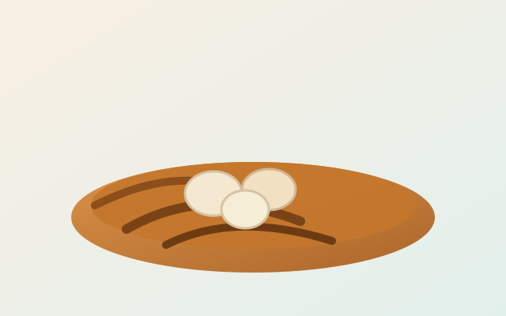
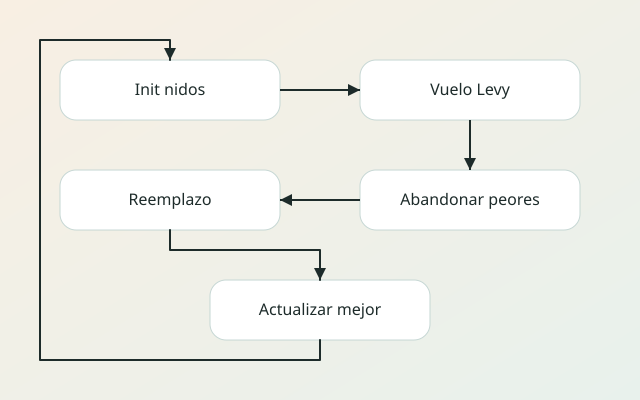
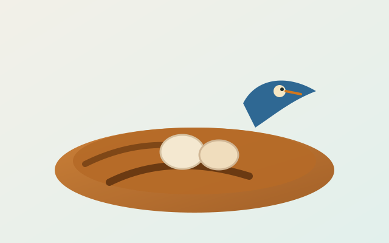
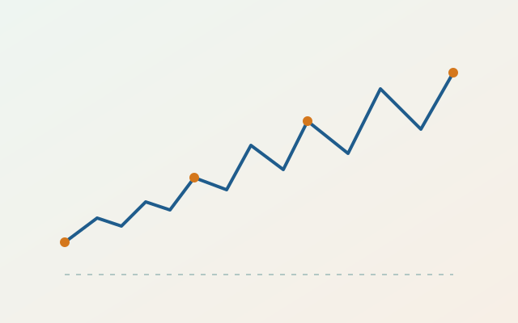

Algoritmos metaheurísticos
Cuckoo Search
Un recorrido completo por el algoritmo: origen biológico, fundamentos matemáticos, parámetros, fortalezas, límites y una demo 2D/3D en vivo para fines de presentación.
Alcocer Camarena Christopher.
Abarca Núñez Antonio
Padilla González Fernando Daniel
Qué es Cuckoo Search
Cuckoo Search (CS) es un algoritmo metaheurístico de optimización global. Modela un conjunto de nidos, donde cada nido representa una solución candidata. La idea central es generar nuevas soluciones con vuelos Levy (saltos de longitud variable) y reemplazar soluciones peores con soluciones mejores. Esta dinámica favorece la exploración sin perder la explotación local.
CS es útil para problemas continuos, discretos o combinatorios, y puede hibridarse con búsquedas locales o técnicas de aprendizaje. Su popularidad proviene de su simplicidad, pocos parámetros y buen equilibrio entre exploración y explotación.
Componentes del modelo
- Nido = solución candidata.
- Huevo = nueva propuesta generada desde un nido.
- Fitness = calidad de la solución (qué tan buena es).
- pa controla cuántos nidos se reemplazan.
El algoritmo mantiene un número fijo de nidos y solo reemplaza aquellos que resultan peores en comparaciones locales, lo que evita un crecimiento descontrolado de población.


Origen y creadores
El algoritmo fue propuesto por Xin-She Yang y Suvash Deb en 2009. Su artículo inicial, "Cuckoo Search via Levy Flights", presentó la idea de combinar parasitismo de puesta con vuelos Levy para optimización global. Posteriormente, el método fue refinado y aplicado en numerosos estudios y dominios de ingeniería.
Inspiración biológica
Algunas especies de cucos no construyen nidos propios. En cambio, depositan sus huevos en nidos de otras aves. Los anfitriones pueden descubrir los huevos ajenos con cierta probabilidad y, si lo hacen, los expulsan o abandonan el nido.
- Cada nido contiene un huevo (una solución candidata).
- Los mejores huevos pasan a la siguiente generación.
- Con probabilidad pa, un nido detecta el huevo y se reemplaza.
Esta analogía permite un mecanismo simple de reemplazo competitivo y un control natural sobre el porcentaje de exploración.


Vuelos Levy y balance exploración-explotación
Los vuelos Levy son caminatas aleatorias con distribución de pasos de cola pesada. Esto genera muchos pasos cortos (explotación local) y, de vez en cuando, saltos largos (exploración global). En optimización, esta mezcla ayuda a escapar de mínimos locales sin perder velocidad de convergencia.
Formalmente, la longitud de paso \(L\) sigue una ley de potencia: $$p(L) \propto L^{-(1+\beta)},\; 0 < \beta \le 2$$ Esto genera colas pesadas: la mayoría de los pasos son cortos, pero ocasionalmente aparecen saltos largos que exploran zonas nuevas del espacio.
En la práctica, CS suele usar el método de Mantegna para muestrear los pasos de Levy (combina dos normales para obtener la cola pesada) y aplica el salto en cada dimensión.
- Si \(\beta\) se acerca a 2, el comportamiento se parece a un paseo gaussiano.
- Con \(\beta\) más pequeño, hay más saltos largos y mayor exploración.
- alpha escala el tamaño del salto según la magnitud del problema.
Levy Flight en detalle
En CS, cada nido genera un salto aleatorio para proponer un huevo nuevo. Ese salto se calcula con una distribución de cola pesada, que favorece pasos cortos frecuentes y pasos largos ocasionales.
Significado de símbolos
- \(L\): longitud del salto (tamaño del paso).
- \(p(L)\): probabilidad de observar un salto de tamaño \(L\).
- \(\beta\): controla qué tan pesada es la cola (más pequeño = más saltos largos).
- \(\alpha\): factor de escala para ajustar el salto al tamaño del problema.
- \(x\): posición actual; \(x'\) es la nueva posición propuesta.
Una forma común de aplicar el salto es: \(x' = x + \alpha L\). En problemas con varias dimensiones, se aplica el salto por componente y luego se recorta a los límites válidos.
Ejemplos de tamaño de salto
- Salto corto: \(L\) pequeño, por ejemplo \(L \approx 0.1\). El nido se mueve cerca de su zona actual.
- Salto largo: \(L\) grande, por ejemplo \(L \approx 3\) o más. El nido explora otra región.
Esto explica la mezcla de explotación (pasos cortos) y exploración (pasos largos) en el mismo algoritmo.
Método de Mantegna
Es una técnica para muestrear \(L\) con cola pesada. Genera dos variables normales independientes \(u\) y \(v\), y luego calcula: $$L = \frac{u}{|v|^{1/\beta}}$$ Con una constante \(\sigma\) que ajusta la varianza de \(u\). Este método produce saltos pequeños la mayor parte del tiempo y, ocasionalmente, saltos muy grandes.
Algoritmo paso a paso
- Inicializa n nidos con soluciones aleatorias.
- Genera un nuevo huevo por vuelo Levy desde un nido.
- Selecciona un nido aleatorio y reemplázalo si el nuevo huevo es mejor.
- Abandona una fracción pa de nidos peores y crea nuevos.
- Conserva el mejor nido y repite hasta detener.
El criterio de paro puede ser un máximo de iteraciones, un umbral de error o un presupuesto de evaluaciones.
Pseudocodigo compacto (CS)
inicializar nidos y evaluar fitness
mejor <- mejor(nidos)
repetir hasta criterio_paro:
para cada nido i:
candidato <- nido_i + alpha * levy(beta)
recortar candidato a limites
j <- nido_aleatorio()
si fitness(candidato) < fitness(nido_j):
nido_j <- candidato
reemplazar peores pa*nidos por aleatorios
mejor <- mejor(nidos)
devolver mejorParámetros clave
n (número de nidos)
Controla diversidad. Típico: 15 a 50.
pa (probabilidad de abandono)
Define cuánto se renueva el conjunto. Típico: 0.1 a 0.3.
alpha (tamaño de paso)
Escala el salto de Levy. Ajusta exploración.
beta (cola Levy)
Tipico: 1.5. Cola pesada, saltos largos ocasionales.
Buenas practicas
- Normaliza variables para que el paso tenga escala coherente.
- Usa pa más alto al inicio y reduce si buscas refinamiento.
- Combina CS con búsqueda local para explotar el mejor nido.
Una regla simple es iniciar con diversidad alta y luego disminuir el salto para pulir soluciones.
Propiedades y complejidad
CS es estocástico, por lo que no garantiza el óptimo global en cada ejecución. Sin embargo, en la práctica ofrece un buen equilibrio entre búsqueda amplia y refinamiento local.
- Complejidad aproximada: O(n * d * T), donde d es dimensión y T iteraciones.
- Pocos parámetros y fácil implementación.
- Buena capacidad para escapar de mínimos locales.
Fortalezas y límites
- Robusto en funciones multimodales y no convexas.
- No garantiza óptimo global; es un método estocástico.
- El costo dominante es evaluar la función objetivo.
- Si pa y alpha son muy bajos, puede estancarse.
Cuándo usarlo
Cuando el problema es no convexo, multimodal o no diferenciable, y se requiere un método robusto con baja complejidad de implementación. CS es una buena primera opción antes de modelos más costosos.
Comparación rápida
CS
Simple, balanceado, pocos parámetros.
PSO
Rápido en problemas suaves, sensible a parámetros.
GA
Flexible, pero suele requerir más ajustes y operadores.
La comparación depende del problema: CS tiende a ser competitivo cuando se busca un equilibrio entre simplicidad y exploración global sin demasiados parámetros.
Variantes y extensiones
Las variantes de CS nacen para adaptarse a tipos de variables, restricciones y objetivos múltiples. En la práctica, se ajustan el tipo de representación y la forma de generar nuevos huevos para mantener un buen equilibrio entre exploración y explotación.
Familias de variantes
- Binary Cuckoo Search para variables discretas.
- Multiobjective CS con frente de Pareto.
- CS adaptativo con ajuste dinámico de alpha y pa.
- Híbridos con búsqueda local o gradiente.
- Versiones con nichos para mantener diversidad.
Extensiones comunes
- CS con restricciones (penalizaciones o reparadores).
- CS memético: CS + búsqueda local intensiva.
- CS con elite preservation para asegurar calidad estable.
Aplicaciones reales
- Diseño de estructuras y parámetros de control.
- Selección de características y ajuste de hiperparámetros.
- Ruteo, calendarización y problemas combinatorios.
- Segmentación y restauración de imágenes.
- Diseño de antenas, filtros y redes de comunicación.
- Planeación de energía y despacho económico.
Checklist de implementación
- Normaliza el dominio de variables antes de aplicar Levy.
- Define límites claros y aplica recorte por dimensión.
- Controla la tasa de reemplazo con pa.
- Evalúa con el mismo presupuesto de iteraciones en comparativas.
Simulación
Controles
Simulación 2D y 3D
La demo muestra cómo los nidos buscan el mínimo de una función. El mapa 2D es un mapa de calor, y la vista 3D muestra la superficie.